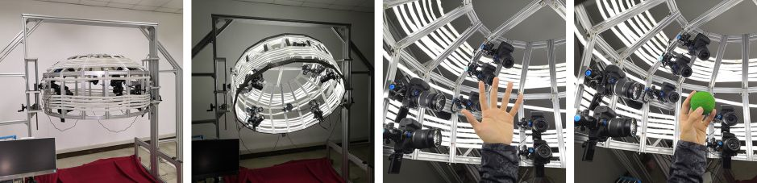
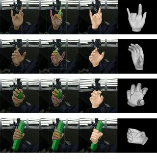
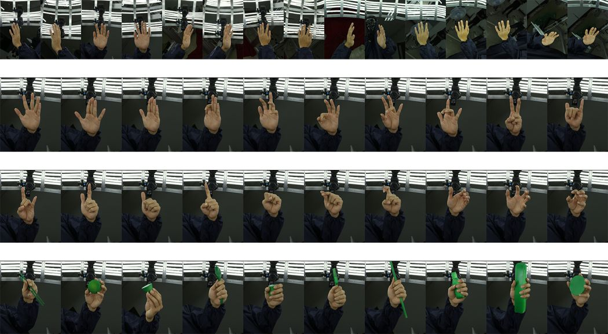

International Conference on Acoustics, Speech and Signal Processing (ICASSP), 2020
Hand-3D-Studio:A New
Multi-View System For 3D Hand Reconstruction
Hardware System

- Resolution: 15 DSLR cameras acquired high quality multi-view 4K resolution color images in a circular manner.
- Ergonomic design: the height and angle of the customized holder can be adjusted depending on the height and shape human.
- Synchronization: The synchronization delay is less than 10 milliseconds, far less than the USB software control scheme.
- Lighting: A total length of 50 meters LED strips are mounted on the outsideofthe”yurt”to provide a shadowless illumination around the hand.
Hand4K Dataset
We have collected multiview hand color images with 10 persons of different genders and skin colors.
The gestures we collected are very representative and common in daily life. For each person, we
collected 50 one-handed gestures and 27 hand-object interaction gestures, both for the left and
right hand. The estures can be divided into 3 categories: finger-movements, common gestures and
hand-object interaction gestures.
|
 |

Download
| The dataset has a total size of 102GB. For your convenience, the dataset has been cut into 10 parts to |
The rights to copy, distribute, and use the Hand4K dataset (henceforth called "Hand4K") you are being given access to are under the control of Yangang Wang, director of the Vision and Cognition Lab, Southeast University. You are hereby given permission to copy this data in electronic or hardcopy form for your own scientific use and to distribute it for scientific use to colleagues within your research group. Inclusion of images or video made from this data in a scholarly publication (printed or electronic) is also permitted. In this case, credit must be given to the publication: *Hand-3D-Studio:A New Multi-View System For 3D Hand Reconstruction*. For any other use, including distribution outside your research group, written permission is required from Yangang Wang.
Any commercial use is not allowed
. Commercial use includes but is not limited to sale of the data, derivatives, replicas, images, or video, inclusion in a product for sale, or inclusion in advertisements (printed or electronic), on commercially-oriented web sites, or in trade shows.
Reference
Zhengyi Zhao, Tianyao Wang, Siyu Xia and Yangang Wang. "Hand-3D-Studio:A New
Multi-View System For 3D Hand Reconstruction". International Conference on Acoustics, Speech and Signal Processing (ICASSP), 2020.
Acknowledgments: This work was supported in part by the National Natural Science Foundation of China (No. 61806054), in part by the Natural Science Foundation
of Jiangsu Province (No. BK20180355), in part by the Shenzhen Science and
Technology Innovation Committee (STIC) (JCYJ20180306174459972) and
“Zhishan Young Scholar” Program of Southeast University.